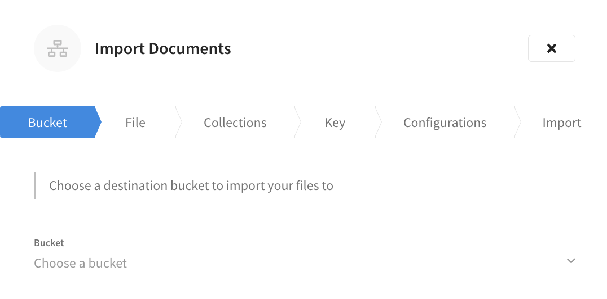
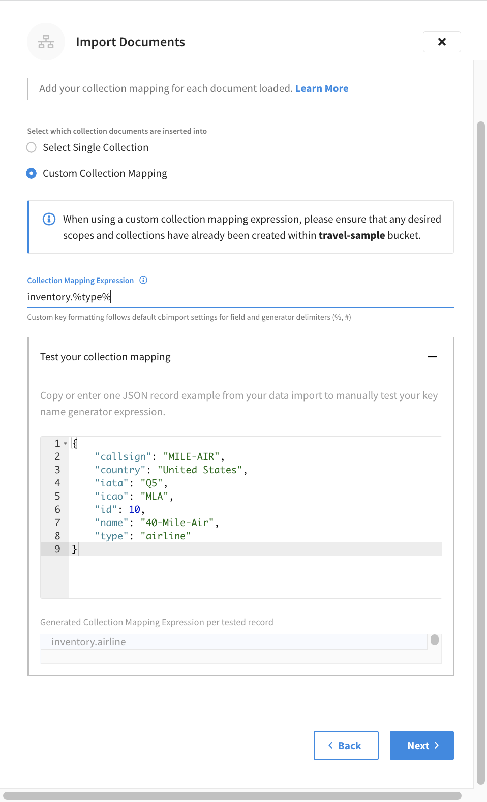
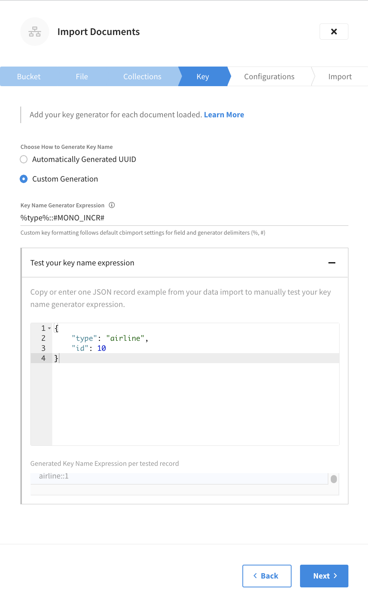

Import Data
Import JSON docs and CSV files, from a local machine or URL.
If you have a dataset in CSV or JSON, you can import it to Couchbase Capella from a local file or a pre-signed remote URL. This file archive can be zipped up before import.
Replication or backup-restore may be easier options if you are migrating to Capella from an on-premises database. If that’s not possible, the Import tool gives you flexibility over which documents you import, and key generation can be an advantage during a migration. Keys for each document extracted from a CSV row or JSON list flat file can be auto-generated, or you can specify custom generating expression.
Accessing Import in the Capella UI
The Import tool, a list of previous imports, and sample bucket data are all accessible from an open database by clicking .
| When using a trial account, the Quick Start tab also has a link to the Import tool. |
Import Overview
The Import tool has two major sections: Import and Import Sample Data.
At the top of the screen, the Import section has controls to start the import process and lists any previous imports. You can search this list of imports or filter it to show imports initiated by your account. Imports show the destination bucket, the import status, who imported the data, when the data was imported, and the import filename and size.
The bottom half of the Import screen includes a selection of sample buckets that you can import into your database. These buckets include example data and indexes for experimentation and testing purposes. You can import sample data by clicking Import inside the sample description block. When you import a sample, the Import button changes to Imported.
Import Data
| Capella doesn’t inspect file contents before the import process |
-
To import data, click Import.
This action opens the Import Documents fly-out menu.
-
Use the Bucket drop-down menu to choose a destination bucket where you want to import your file.
If you don’t have the appropriate bucket, you need to create one.
 -
Click Next.
-
Choose the file type and format, if applicable.
You have the option of choosing the JSON or CSV format matching the file that you’re importing. If you’ve chosen the JSON format, you also need to specify the format type. JSON format types include:
- Lines
-
JSON doc on each line.
- List
-
List of JSON docs.
- Archive
-
Multiple JSON documents in a ZIP file.
-
Upload file
The Using your web browser option lets you upload a file from your computer. The Manually option lets you use a pre-signed URL to manually upload a file with a custom
cURLcommand.
-
Click Next to apply collection mapping.
Collection Mapping
With the destination bucket and file type set, you need to add your collection mapping. The import feature provides the option to Select Single Collection to import that data to, or Custom Collection Mapping using the sort of custom generation also outlined in the Choose your Keys section.
-
Choose which collection to insert data into.
The options include:
- Select Single Collection
-
This option allows you to import all documents in your import file into a single collection. Choosing the Select Single Collection option provides you with drop-down menus to select the scope and collection from the destination bucket.
- Custom Collection Mapping
-
Make sure that any desired scope or bucket has already been created in the destination bucket when creating a custom collection mapping expression. While choosing a single collection to import your data to is the simplest method, you may need to insert different documents into different collections. For example, you can use custom collection mapping to import your data to a previously created collection based on a field in a document. In this case, if we wanted to import a new set of documents to the travel-sample’s
inventoryscope, within a collection based on each record’stypefield, we could use theinventory.%type%expression.
-
Test collection mapping.
Capella also offers the ability to test your collection mapping to verify that it can be parsed and that it meets your expectations. To test collection mapping, enter or copy a sample JSON record from your import into the Test your collection mapping text area. The Generated Collection Mapping Expression per tested record field automatically updates to show a preview of the collection mapping as it applies to the sample JSON record.
 -
Click Next to choose how to generate keys.
Choose Your Keys
After adding your collection mapping, you must add your key generator. Import offers some options for custom key generation. By default, it automatically generates UUIDs for each JSON document in your file, but you have the option to generate custom keys.
-
Choose how to generate a key name.
The options include:
- Automatically Generated UUIDs
-
This is the default option.
- Custom Generation
-
To generate custom keys, you can use a combination of the following:
-
Characters (any combination of ASCII characters).
-
The values from a given field in the JSON document. Wrap the field name in
%, for example%insurance_number%. Separate nested field names with dots, for examplekey::%name.full.name%. -
Custom generators are wrapped in
#. For example#MONO_INCR#.
-
-
(Custom Generation) To use custom generation, copy or enter a JSON record from your data import into the Test your key name expression text area.
If you enter the custom generator expression before adding a sample JSON record, the test may fail. -
(Custom Generation) Enter a custom generator expression into the Key Name Generator Expression field.
While there is validation to check that expressions can be parsed, Capella also offers the ability to test your key name expression to verify that it meets your expectations. The Generated Key Name Expression per tested record field automatically updates to show a preview of the collection mapping as it applies to the sample JSON record. For example, suppose you enter
#MONO_INCR#. Based on a document’stypefield, it producesairline::1. AsMONO_INCRwas used, the number counter starts with1and increments for subsequent records.You can use the following functions, characters, and field values, to generate custom key names:
-
#MONO_INCR#: integer, incremented by one for each document in the file archive, and starting at1. -
#UUID#: A generated Universally Unique IDentifier.
-
-
-
Click Next to choose various configurations.
Choose Configurations
Now that you have added your key generator, you have a range of configuration options to choose from. These configuration options control which parts of an archive you want to import.
-
Review the available configuration options for the file type that you are importing. Toggle any options that you want to apply to your import.
-
Skip Documents: by default, all documents are loaded. Setting this option allows some documents to be skipped before the importation stage. When enabled, a field is where you must enter the number of documents to skip before the import starts.
-
Limit Documents: stop loading after a certain number of documents. This can be used for partially loading large datasets. When enabled, a field is where you must enter the number of documents to import.
-
Ignore Fields: omit named fields from the uploaded documents. Use this in conjunction with the
%field_name%part of the custom generator to take out a document key from a field in a document — removing it from the body of the document, and placing it in the key name. When enabled, a field is where you must specify a comma-separated list of field names to exclude from the import.
-
Skip Documents: by default, all documents are loaded. Setting this option allows some documents to be skipped before importation stage. When enabled, a field is where you must enter the number of documents to skip before the import starts.
-
Limit Documents: stop loading after a certain number of documents. This can be used for partially loading large datasets. When enabled, a field is where you must enter the number of documents to import.
-
Ignore Fields: Omit named fields from the uploaded documents. Use this with the
%field_name%part of the custom generator to take out a document key from a field in a document, removing it from the body of the document, and placing it in the key name. When enabled, a field is where you must specify a comma-separated list of field names to exclude from the import. -
Infer Field Types: all values in a CSV are interpreted as strings by default. Setting this option causes the Import tool to look at each value and decide if it’s a string, integer, or boolean value and put the inferred field type into the document.
-
Omit Empty Fields: rows in the CSV file which don’t contain data are stored as empty strings in the JSON doc. Setting this option omits these fields from the uploaded document.
-
-
Click Next to review and complete your import.
Review and Import
With the import’s configuration options set, you have the chance to review and complete your import.
-
Verify that the details of your import match your requirements.
Several configurations are available, to skip or alter the documents uploaded. If you need to make any changes, click Back to return to the previous stage of the import. Or, at the top of the fly-out menu, click the tab of the import stage that you want to return to.
You can’t close the fly-out menu and come back to the same step by reopening it. You must complete all the steps for the import process in one UI session. 
-
After reviewing the details of your import, click Import.
The Import tool starts the process of importing your data. You can track this process using the tool’s import status information.
Import Status
The Import Documents fly-out menu remains open to show the status of the import. Feel free to navigate away from this menu to other tasks. The status of imports is also shown on the screen’s import section. Once an import is successful, its status changes from In Progress to Completed.
Clicking on the name of the destination bucket for an import listed in the Import section opens the Import Documents fly-out menu. This menu shows an import summary that includes the number of imported and failed documents, collection mapping, key name, and any ignored fields.
The listing for your import in the Import section also includes a link to the import’s Records Log. This is found by clicking the More options icon on the same line as the import that you are working with and clicking Download Log File.
Capella keeps import logs for seven days. An option to delete import logs before this period elapses is under the More options icon.
Further Reading
The Import tool loads data into a bucket on your database. If you wish to restore a bucket of data, refer to the Restore a Bucket page.